P3
Outline
-
Character Kinematics (cont.)
- Motion Retargeting
- Full-body IK
-
Keyframe Animation
- Interpolation and splines
P4
Recap: Character Kinematics
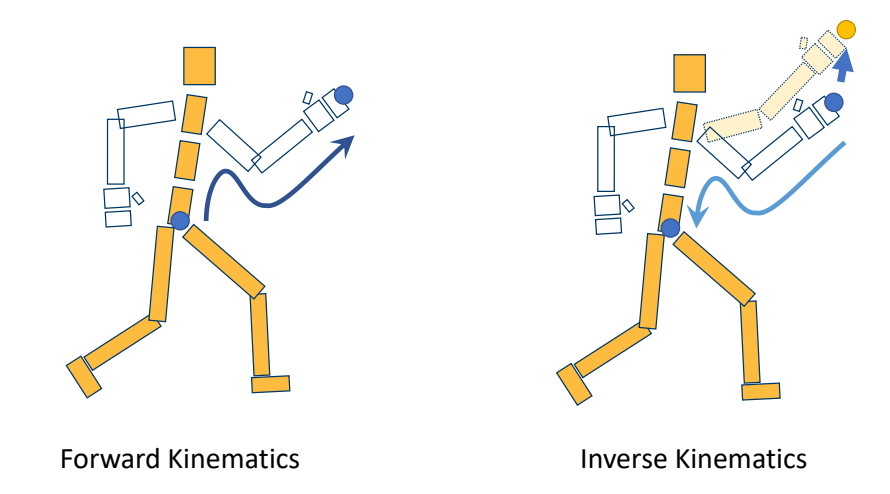
P15
Reference Pose
{ \(𝑅_𝑖 = 𝐼\) }
The pose with zero / identity rotation Bind pose / Reference pose
❗ reference pose不一定是Tpose。
P16
T-Pose? A-Pose?
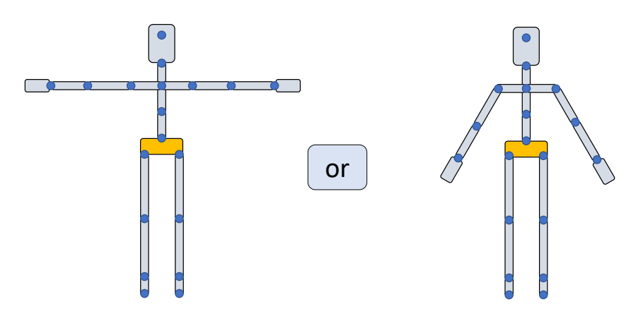
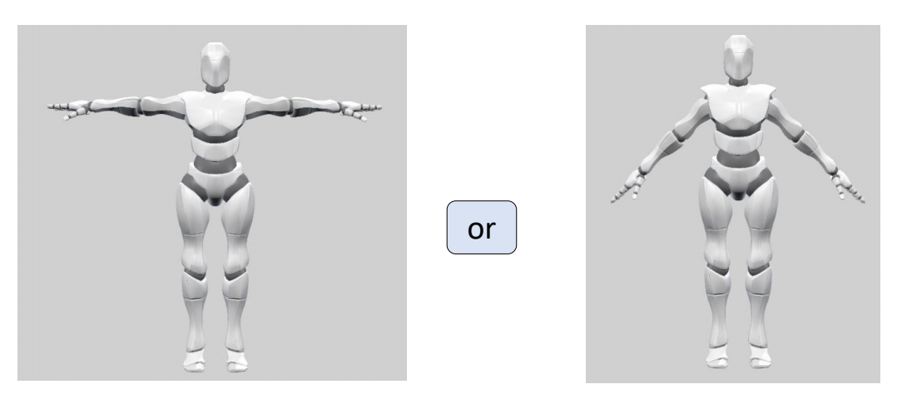
✅ 常见的reference pose一般为Apose或者Tpose。
✅ 对于骨骼动画来讲，\(A\) 或 \(T\) 都一样。
✅ 对于骼骼绑定与蒙皮来讲，更倾向于\(A\)。因为 \(A\) 的肩膀是自然状态。
P19
特殊的reference pose
| 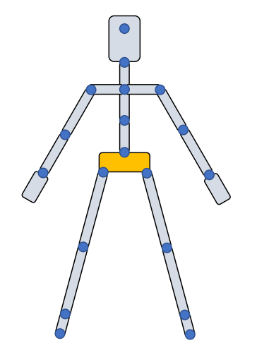 | 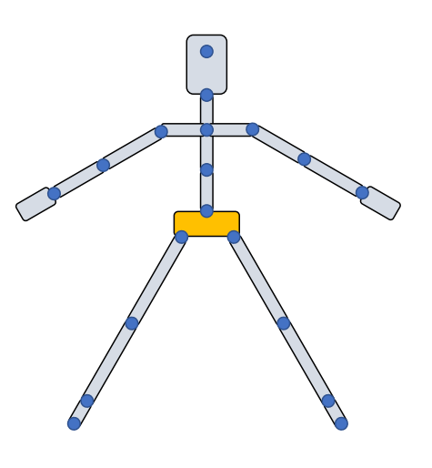 | 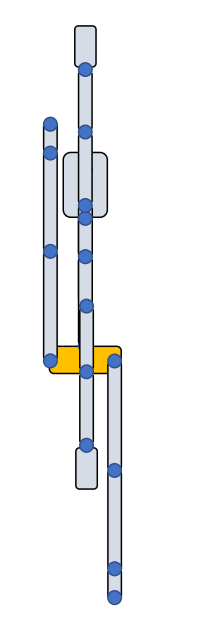 ✅ 这个动作跟建模师建模时的动作镜像操作有关。 |
P23
不同reference pose会引入的问题
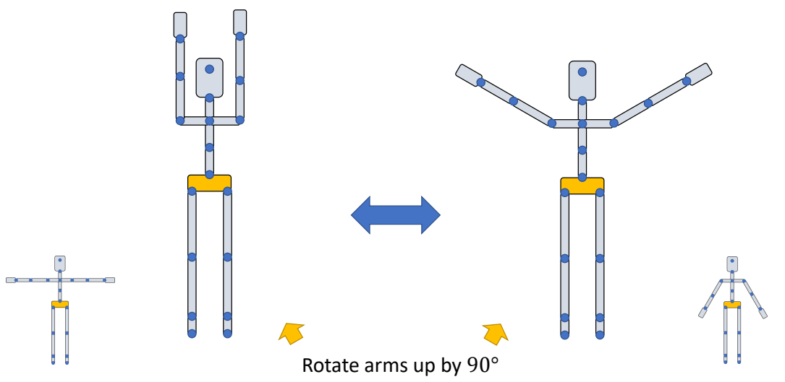
✅ 相同的姿态参数放在不同的参考姿态下呈现出的姿态不同。 ✅ 解决方法：Retargeting
P29
Retargeting between reference poses
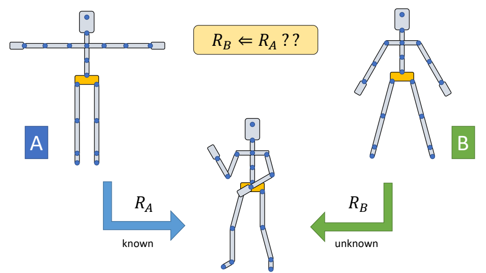
✅ 让不同参考姿态的角色做出同样的动作，根据 \(R_A\) 求 \(R_B\).
✅ 重定向还有其它问题，例如关节长度、穿模。
P33
Retargeting for a single object
问题分析
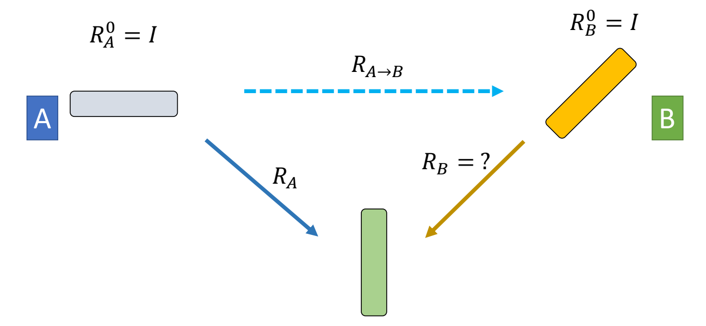
公式推导
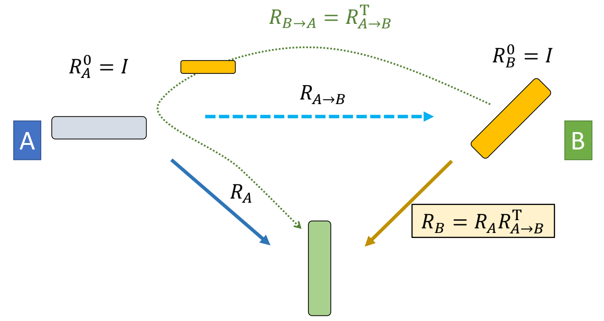
✅ 把 B 先转到 A 的姿态，再做指定动作。
P45
Retargeting for a chain of links
问题分析
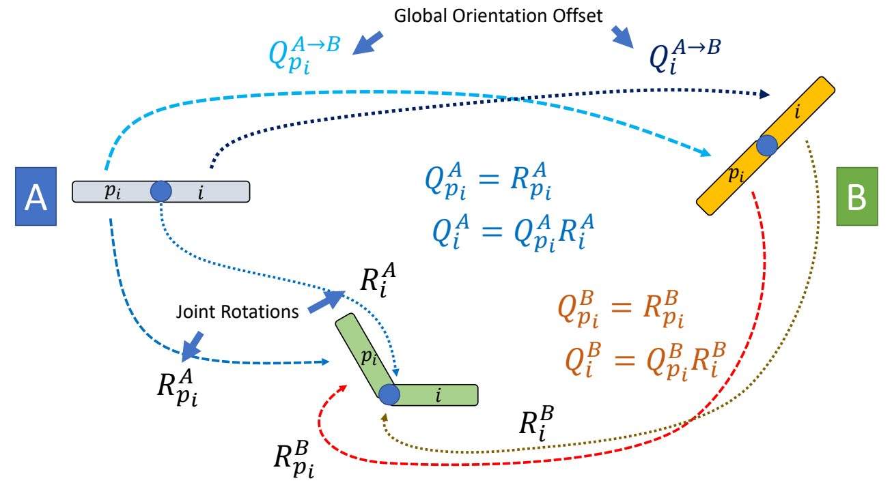
✅ 两个关节的场景
公式推导
P49
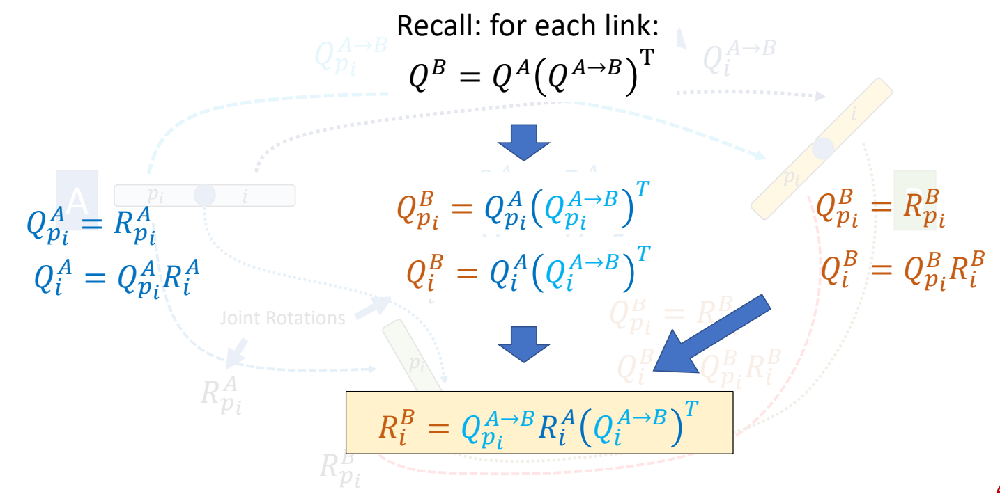
结论
P51
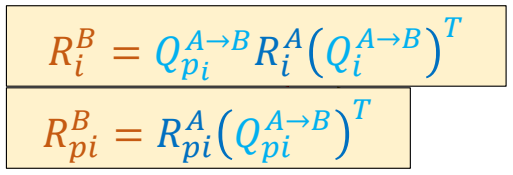
P52
Retargeting between reference poses
问题分析
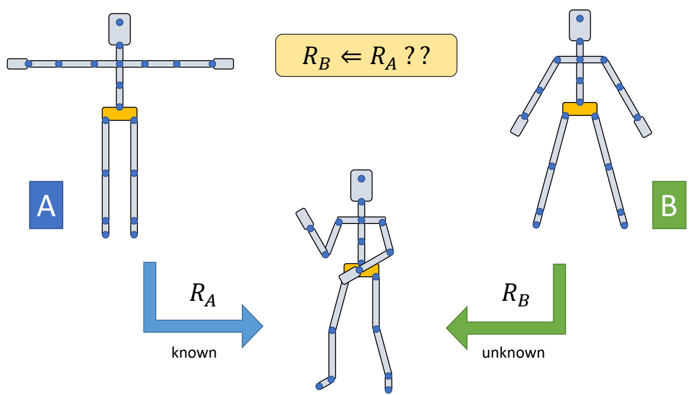
P53
结论
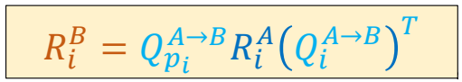
P101
Keyframe Animation and Interpolation
✅ Keyframe Animation跳过
P106
Interpolation
- Given a set of data pairs \(D=\){\((x_i,y_i)\mid i=0,\dots ,N\)} find a function \(f(x)\) such that
P107
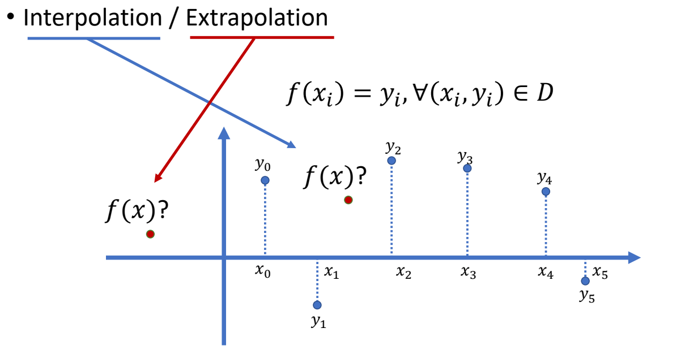
常见的差值方法有Linear Interpolation、Polynomial Interpolation等。详见GAMES102。
P114
Smoothness
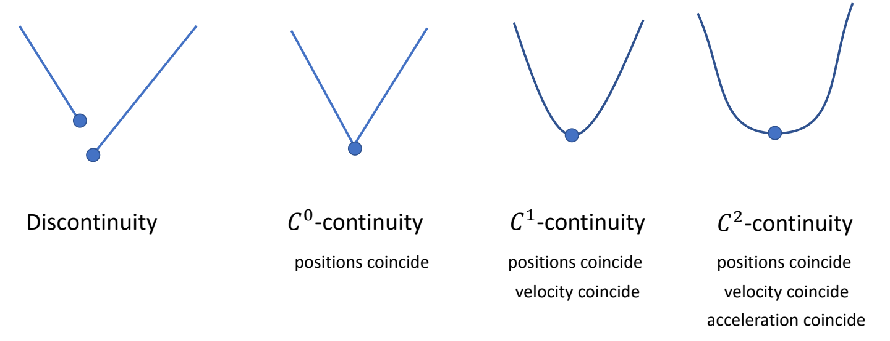
Interpolation of Rotations
P154
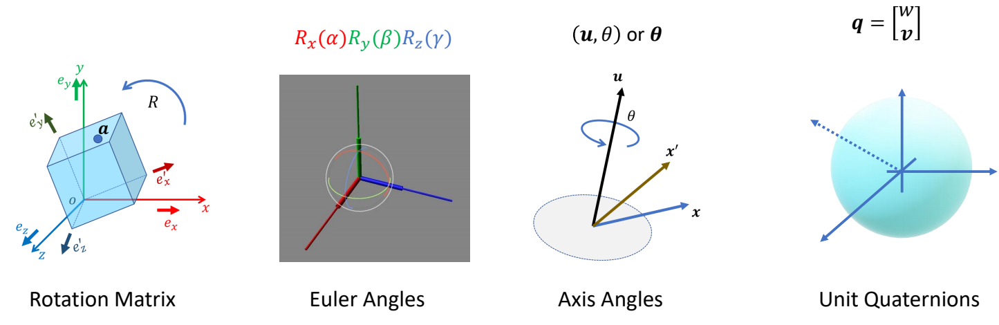
P157
SLERP for Quaternions
$$ q_t=\frac{\sin[(1-t)\theta ]}{\sin \theta } q_0 + \frac{\sin t \theta }{\sin \theta }q_1 $$
$$ \cos \theta = q_0 \cdot q_1 $$
Constant rotational speed, but only “linear” interpolation
P158
🔎 Animating rotation with quaternion curves.
Ken Shoemake. 1985
SIGGRAPH Computer Graphics,
本文出自CaterpillarStudyGroup，转载请注明出处。
https://caterpillarstudygroup.github.io/GAMES105_mdbook/